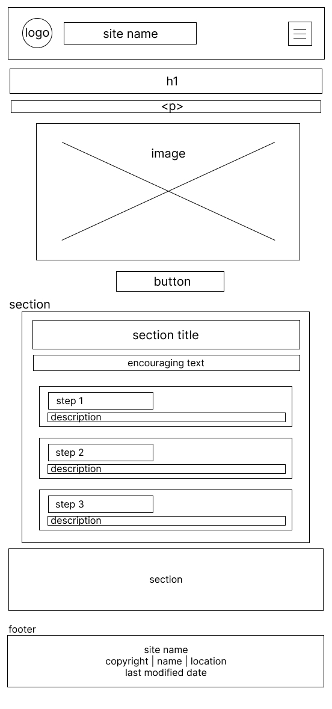
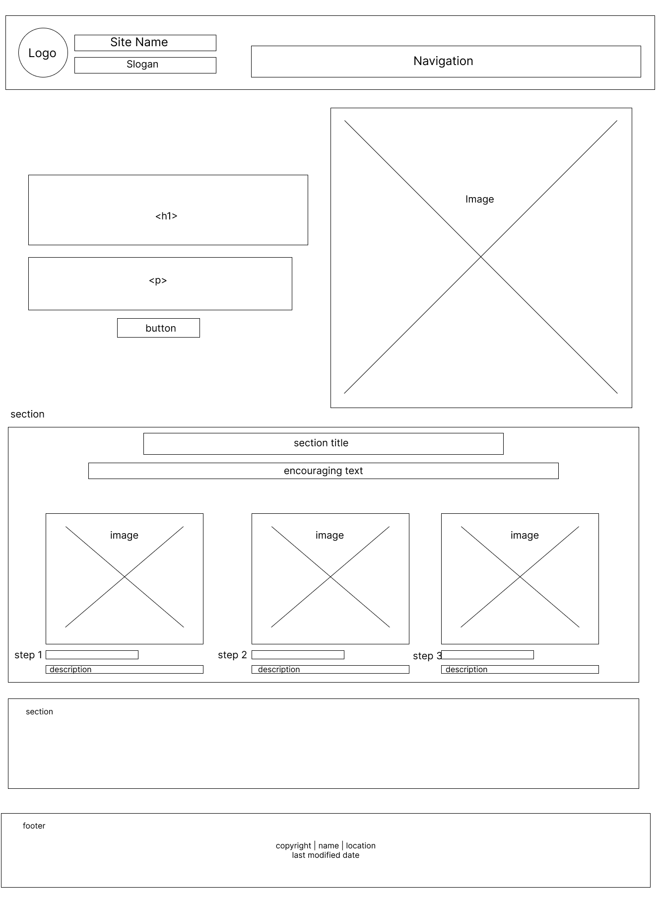

Site Name
One Paw at a Time - This name represents the ideas that every rescue matters but at the same time, that small acts bring meaningful life-changing outcomes for our furry, stray neighbors.
Possible domain: onepawatatime.com
Site Purpose
The site provides a practical guide to help individuals assess the needs of a given stray dog, safely rescue and provide assistance and care, and finally finding responsible permanent homes for the animals.
Scenarios
- How can I recognize when a dog is in need of rescuing?
- What can I do to help an animal in need when I see one?
- Once the dog is healthy, what comes next?
Color Scheme
#55542A
Header, footer, headings.
#FAF6EC
Page background
#63326E
Accents, buttons, links.
#582B14
Paragraph text.
Typography
Headings → "Agrave Pro".
Body → "Source Sans 3".
Wireframes

